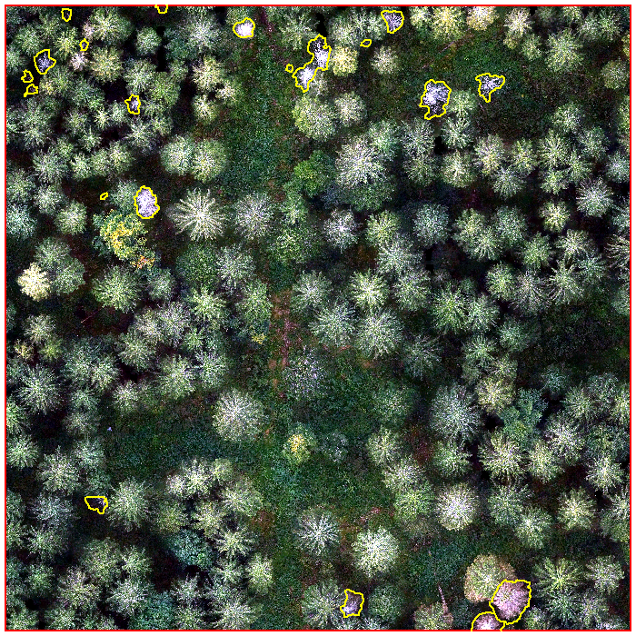

In this tutorial you will learn how to map deadwood from RGB drone imagery using Deep Learning. The data used in this tutorial can be found here
In this tutorial we will use R.
A step-by-step guide how to install tensorflow can be found here
For this tutorial you don’t need to conduct any UAV flights or reference data labeling and you can go directly to this link and download the data. The UAV imagery is stored in the subfolder UAV, whereas the deadwood polygons can be found in the subfolder delineation.
To begin, we first need to load our data:
dataDir <- "C:/Users/FeSch/Desktop/TutTest/"
sites <- list.files(path = dataDir, pattern = "tif", recursive = T, full.names = T)
# load first scene of drone imagery
uav <- raster::stack(sites[1])
# load area of interest
AOI <- rgdal::readOGR(dsn = "C:/Users/FeSch/Desktop/TutTest/sites/study_sites.shp")
# load deadwood delineation
deadwood <- rgdal::readOGR(dsn = "C:/Users/FeSch/Desktop/TutTest/delineation/poly_deadwood.shp")We crop the raster stack to the AOI and plot the results.
AOI1 <- AOI[AOI$plot_no == AOI$plot_no[1], ]
uav <- raster::crop(uav, AOI1)
plotRGB(uav, stretch = "lin")
lines(AOI1, col = "red", lwd = 3)
lines(deadwood, col = "yellow", lwd = 2)